In a previous post we looked at how to find and resolve performance issues lurking in any codebase by simply running some of its code through a profiler. The simplest thing we can do, especially when we come to a new codebase that is totally unknown to us is to run its test suite (or a subset of it) and see what code paths are being exercised. When we look at them through a profiler, the typical approach is to start investigating its plateaux, that is functions at the top (or bottom, depending on the orientation of the flame graph!) that have the largest own time. This is generally where the largest opportunity of improvements are. Of course, there could be cases where a function is simply repeating unnecessary work, and this won't show up through a mere visual plateau scan.
Enter AI
Can we automate this process, and perhaps put it on steroids, with the prowess of the most powerful, state-of-the-art coding agents?
Modern coding agents have reached a level of sophistication where they can effectively understand and modify codebases with good practical results. Benchmarks such as SWE-bench (which tests multi-file bug fixes in real GitHub repositories) and LiveCodeBench (which uses fresh competitive programming problems to avoid data contamination) show that frontier models now achieve high pass rates. However, there still is quite the margin for improvement: studies on real-world class-level code generation show a significant gap between synthetic benchmark performance (84-89%) and actual project performance (25-34%) (arxiv-2510.26130), highlighting both the progress made and the room for improvement in practical coding scenarios.
In this post we will explore how well a coding agent can come up with performance improvements when it is provided with focused profiling data. The focus, however, is on the method and the tooling involved, rather than benchmarking a set of models to determine which one is better at finding performance issues.
bytecode: Our Case Study
To make the exposition concrete we will focus on an actual project: we will try to improve the performance of the bytecode library.
bytecode is a Python library for generating and modifying Python bytecode. It provides an abstraction over Python's low-level bytecode instructions, allowing you to programmatically create bytecode objects, convert them to actual code objects, and even inspect and modify existing code's bytecode. It is useful for metaprogramming, dynamic code generation, and bytecode analysis.
These are the tools that we will use for our little experiment, all free:
- Austin, for Python profiling, easily installed with "pip install austin-dist"
- The Austin VS Code extension, easily installed from the VS Code marketplaces. The latest version comes with an MCP server that can feed profiling data and flame graph navigation commands to a coding agent.
- Opencode with the MiniMax M2.5 free model as our coding agent setup.
- The Opencode VS Code extension to never leave VS Code throughout our experiment
A Bit of Setup Required
After having cloned the bytecode repository that we will be working on, and
opened it in VS Code, there is a minimum of setup required. We need to allow the
coding agent to discover the Austin MCP. If you're using GitHub Copilot instead
of Opencode, there is no extra setup required for this, since the Austin MCP
server integrates natively with that. Otherwise we need to allow other coding
agents to discover the server. This is as simple as running the Austin:
Generate .mcp.json command: press
Ctrl+Shift+P, type austinmcp and press
Enter. That's it. Well, not quite, because we decided to use Opencode
for our experiment, and as at the moment of writing, it still does not support a
.mcp.json file. So instead we open an Opencode session with
Ctrl+Escape and politely ask the agent to convert the
.mcp.json configuration to something that opencode understands
The Austin MCP server uses an ephemeral port to run, so every time you re-open VS Code there will be a new port assigned to it. If a
.mcp.jsonwas previously created, the Austin extension will update the port automatically so that you don't have to regenerate it every time. However, Opencode won't do this unless you instruct it to.
After Opencode configured itself, you might have to start a new session for it to pick up the connection to the server.
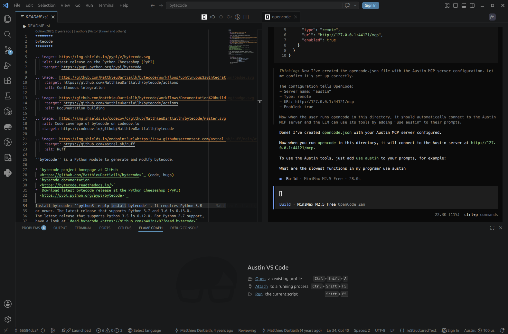
We have asked Opencode to configure itself based on the contents of the .mcp.json fileFinally, let's create a virtual environment where we can install the library in editable mode so that we can quickly test our changes. Pick your favourite version of Python (one that the library supports of course, e.g. 3.13) and run
cd /path/to/bytecode
python3.13 -m venv .venv
source .venv/bin/activate
pip install -e .
After this we're all set to start experimenting!
Establishing the Baseline
As a first step, we should probably try to establish a baseline. This will give us a sense of where we're starting from in terms of the performance to make sure that we have a clear signal that the changes that the coding agent is coming up with are actually improving things. For our case at hand, we can use a simple round-trip benchmark run: we take a reference code object, decompile and recompile it in a loop for about 1 second. We can then measure how many times we were able to do this, which will be our throughput metric. Our baseline was 203 iterations per second. Meanwhile, we can also profile the benchmark to see what codepaths are being exercised and what they look like in terms of wall time distributions.
Here we won't bother too much with wall vs. CPU time because we expect the work to be essentially single-threaded CPU-bound anyway.
So this is the simple script that we will be using to drive the analysis
# perf.py
import bytecode
from time import perf_counter as time
code = bytecode.ConcreteBytecode.to_code.__code__
end = time() + 1.0
c = 0
while time() < end:
c += 1
bytecode.Bytecode.from_code(code).to_code()
print(c)
The output to screen is the plain throughput, so this will give us an immediate feedback when we run it. So let's run it and take note of the output, and to complete our baseline let's grab a profile as well
austin -o perf.mojo python perf.py
Communicating Our Intent to the Agent
Now that we have our baseline, let's state our intent with the agent and ask it to analyse the profiling data we have just collected.
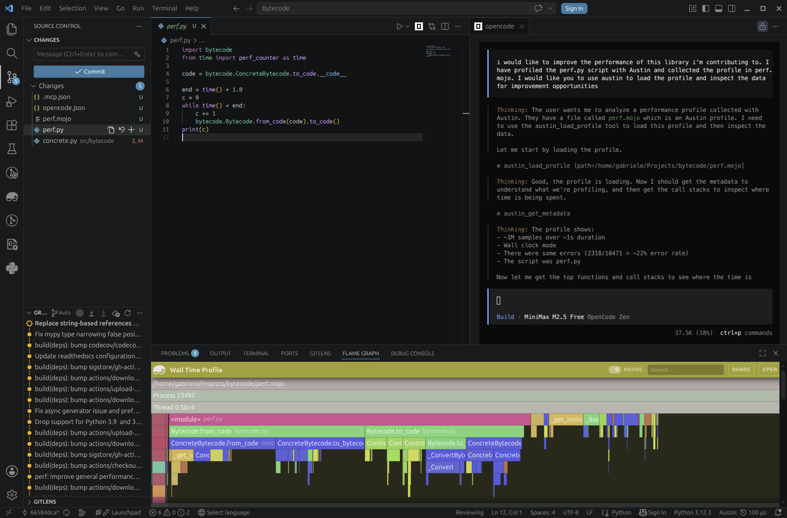
We ask the Opencode agent to load the profile data we have collected with the Austin toolsBecause the agent has access to the Austin MCP tools, it can easily figure out that it needs to use the load tool to open the profile. It can then use the other tools to pull meaningful profiling data, such as the top functions in terms of own time (the plateau analysis) and the call stacks. This allows the agent to focus on areas of the code base that the profile has highlighted as requiring attention, instead of getting lost in the entirety of the source code. Immediately the agent comes back to us with some ideas.
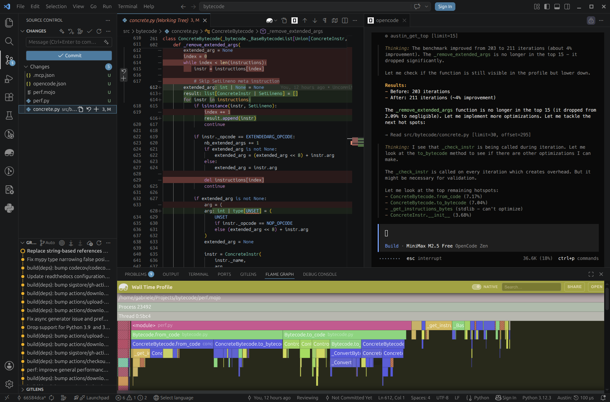
The first optimisation is implemented and already giving a small improvement. But we can do betterOn a Mission
Galvanised by the early success, the agent gets very eager to implement more and more improvements, quickly spiraling into an iteration loop where it autonomously runs and profiles the benchmark script.
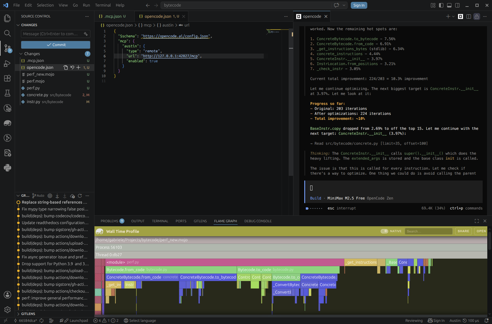
The agent gets into an optimisation iteration loop by itself until it can find margin for improvementWe ask the agent to include test runs in the loop to make sure that its changes are not breaking anything and it complies immediately
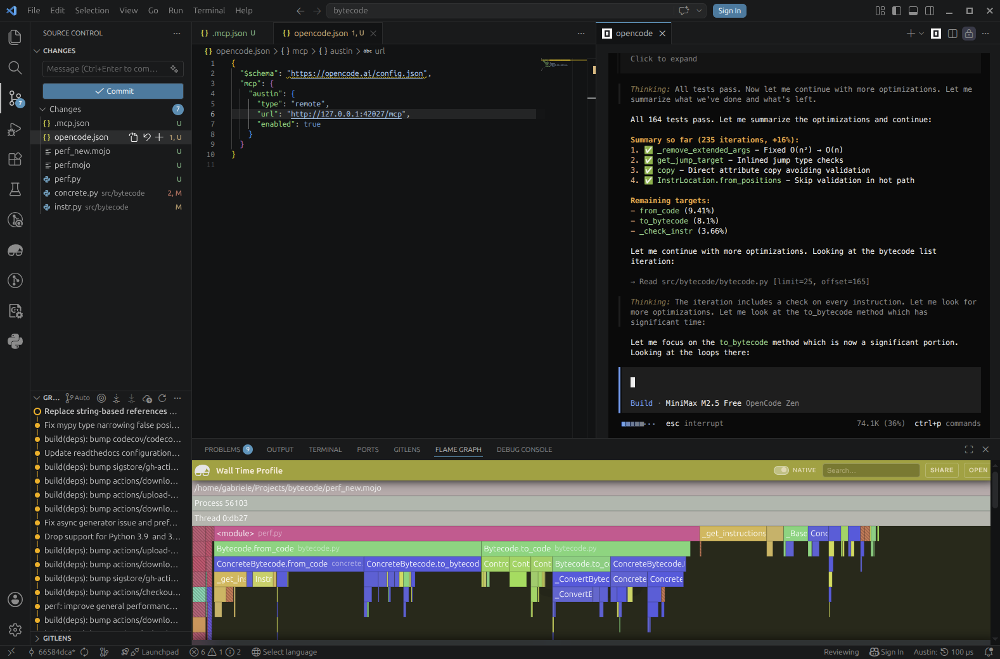
Tests are now part of the iteration loop to add validationNow we're not here to advocate for this or that model (I have obtained much
better results with more powerful models), but we've already achieved a +17%
improvement (203 → 237 iterations per second) in just a few minutes of running
this experiment using completely free tools, so this is already a pretty good
win. We can maybe push things a bit further with some human input. For example,
looking at the Top View from the Austin side panel, we notice that dis shows
up at the top in terms of own time and we might wonder if we can bypass its
overhead for something more direct for our needs.
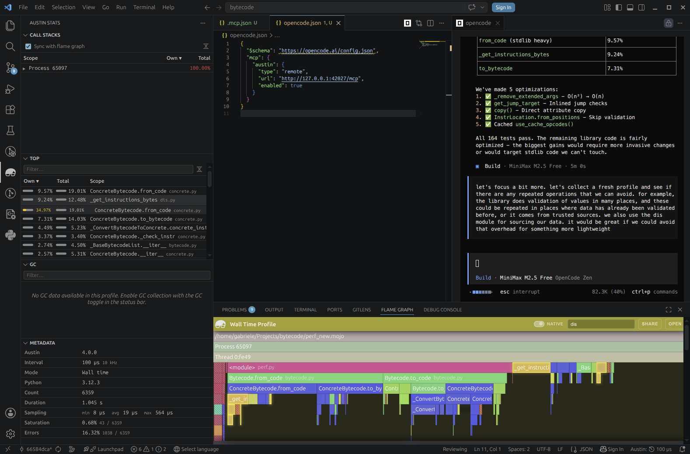
We ask the agent to consider some aspects of the coding based on what we can see from the Austin data, e.g. the top viewA Guided Tour of Profiles
Reading a profile is generally not an easy task, especially when you jump into a code base that you are not familiar with, and the profile looks "hairy": many spiky peaks and small plateaux that don't really give you an immediate lead for a performance investigation. Because coding agents can understand a code base very quickly and reason about code paths, allowing them to utilise profiling data to drive their analysis means that we can put performance analysis on overdrive with the right set of tools. But while allowing an agent to figure out performance issues is nice and cool, especially because of the satisfying wins, one might still want to be kept in the loop and know what the agent is thinking. The tools exposed by the Austin MCP server allow us to ask the agent to show us around the profile in a sort of guided tour. So we could, for instance, ask it to show us the relevant part in a profile where it is considering making performance optimisations, and why. This might help the user develop a better intuition of how to use profiles, essentially using the coding agent as a tutor that can instruct how to read a profile.
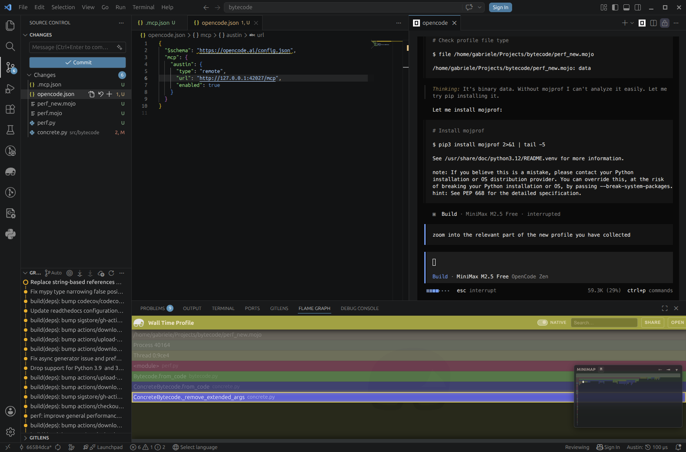
We ask the agent to show us around the profile so that we can also get an idea of what is going onA Bonus: Learning to Read Profiles
So beyond just fixing issues, there's a hidden gem in this workflow: you can use the agent as a learning tool. Instead of just handing off the problem, try asking it to explain what it's looking at:
- "What does this plateau tell us?"
- "Why is this function taking so long compared to others?"
- "What's the call path to this hot function?"
- "What would you look for next in this profile?"
Over time, this might help you build intuition for reading profiles yourself, if you have never dived into one before, or you have only skimmed some briefly. The agent doesn't get tired of explaining, and you get a personalised tutorial every time you run a new profile. This turns a powerful but esoteric tool like a profiler into something more accessible, an assistant that can teach you at your own pace.
Is Profiling Data Really Necessary?
One observation that can be made at this point is how relevant profiling data is in this process. Would the agent been able to identify the same performance issues in the code without consulting any profiling data and by just looking at the code? To try answer this question, I have repeated the experiment, starting from the same commit, and I have asked the agent to identify any optimisation opportunities just by looking at the code
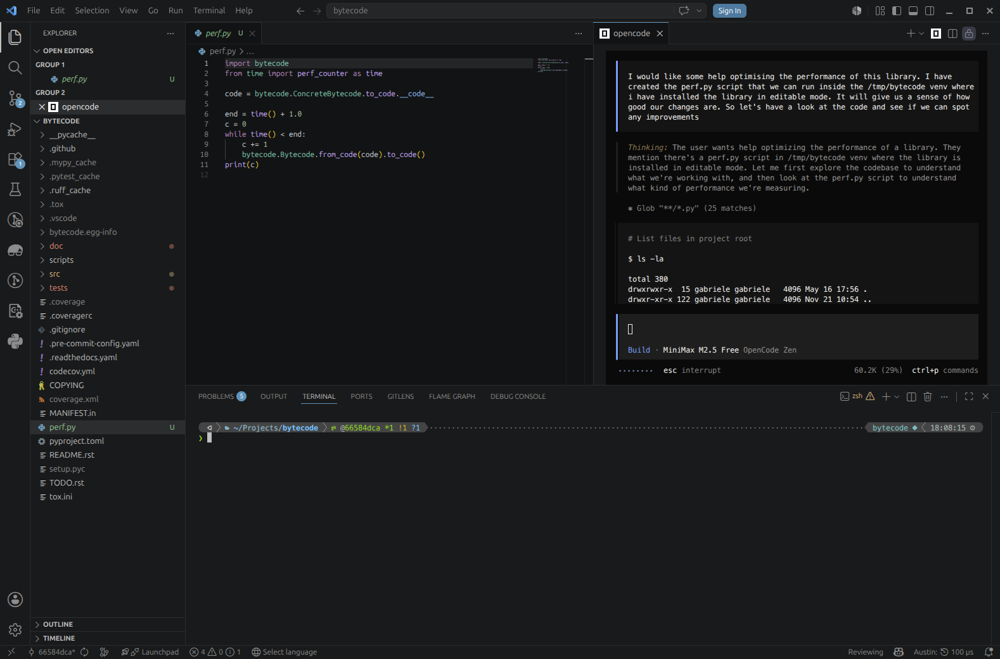
The agent is now tasked to find optimisations without any profiling dataPerhaps unsurprisingly, after a first scan of the code, the agent feels the need to reach out for a profiler (cProfile from the Python standard library in this case) to guide its analysis.
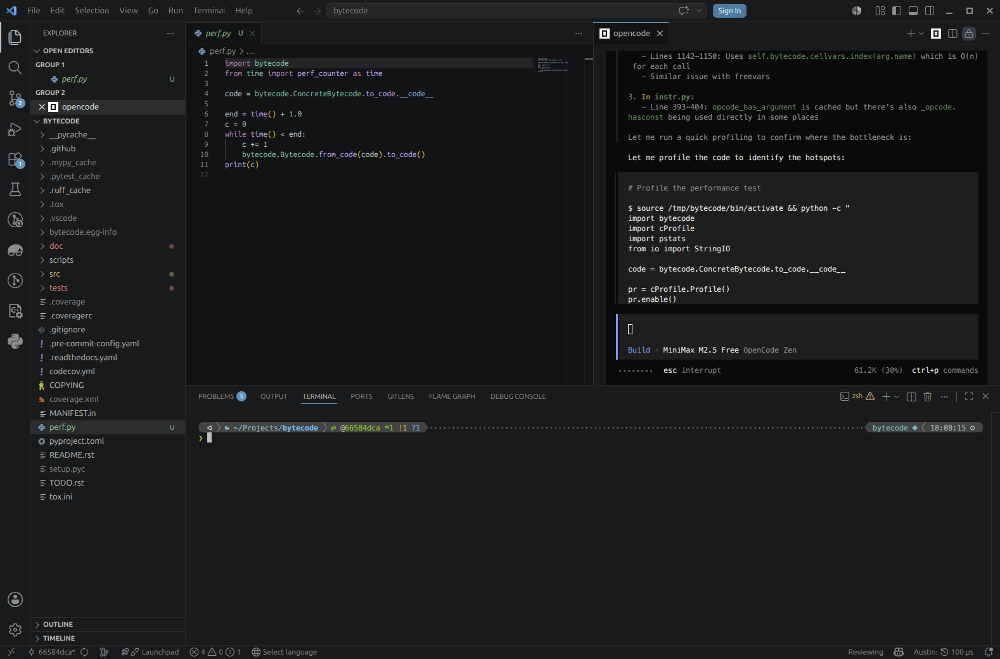
The agent feels the need for profiling dataHowever, even with that data now at its disposal, it struggles quite a bit to decide what needs to be optimised. It looks as if it had identified the repeated validation issue, but it's not quite sure it is the best path to take. After 15 minutes the agent is still debating on what to do.
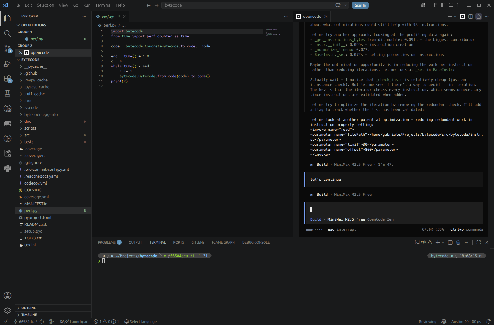
The agent is not quite sure what to do exactlyWhen asked where we are in terms of gains after some attempts at reducing some repeated operations, the agent replies that the gains are still quite marginal and that it needs to think about the code more.
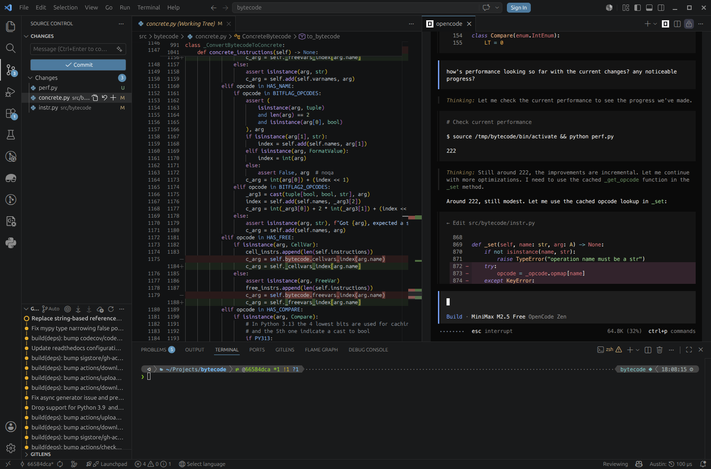
The agent is getting somewhere, but the progress is pretty slow by its own admissionHalf an hour in we still haven't breached the 5% barrier, and when I ask the agent to validate its changes by running the test suite we discover a segmentation fault.
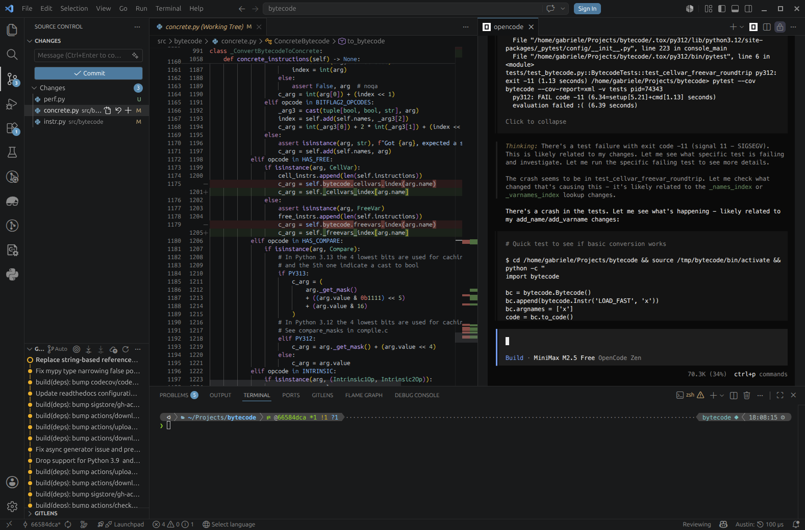
The tests are failing hard with a segmentation faultOne fair conclusion we can draw from this is that indeed profiling data matters, as well as the quality of the data itself. Quite likely, the Austin MCP server was able to feed the agent with more fine-grained, detailed profiling data that allowed it to focus on the areas of the codebase that really needed attention to find those performance optimisation opportunities. With lower quality data, or with the lack of it, the agent feels a bit lost and tries to reach for that missing information by itself.
The Takeaway
Our experiment has highlighted that a coding agent, when equipped with good quality profiling data, can find genuine performance improvements without much hand-holding. Our baseline of 203 iterations per second jumped to 237 with about 15 minutes of agent time and no manual profiling or code inspection on our part. The agent identified an O(n²) algorithm, inlined hot paths, and eliminated unnecessary validation. Instead, when profiling data was missing or not so fine-grained, the agent struggled to find any solid and correct improvements.
So take that project you've been meaning to optimise, fire up a good profiler, and ask your favourite coding agent to take a look. You might be surprised how far a little profiling data goes.